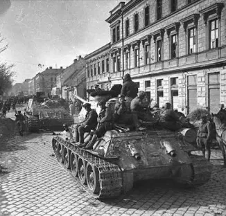
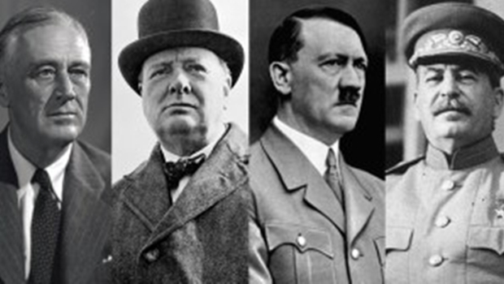
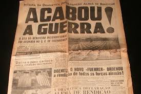
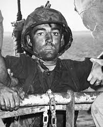

A segunda Guerra mundial foi um conflito militar global que durou de 1939 a 1945, envolvendo a maioria das nações do mundo — incluindo todas as grandes potências — organizadas em duas alianças militares opostas: os Aliados e o Eixo.
Parte I - Segunda Guerra Mundial (1939-1945)

Parte II - Como começou?

A Segunda Guerra Mundial teve início oficial em 1º de setembro de 1939, quando a Alemanha nazista invadiu a Polônia. Em resposta à agressão e aos planos expansionistas de Adolf Hitler, a Grã-Bretanha e a França declararam guerra à Alemanha em 3 de setembro daquele ano.
Parte III - Como terminou?

A Segunda Guerra Mundial terminou oficialmente em 2 de setembro de 1945, com a assinatura da rendição incondicional do Japão a bordo do encouraçado norte-americano USS Missouri. Embora o conflito na Europa tenha cessado em maio, as hostilidades globais só terminaram após os bombardeios atômicos e o recuo japonês.
Parte Final - Ainda restam traumas?

Sim. Os traumas da Segunda Guerra Mundial perduram. Embora o conflito tenha acabado há décadas, ele deixou sequelas profundas que afetam não apenas os sobreviventes e veteranos de guerra, mas também as gerações seguintes, por meio do que a psicologia chama de trauma geracional ou intergeracional.